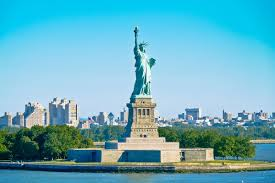
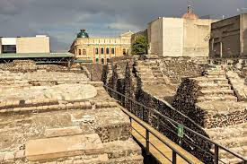
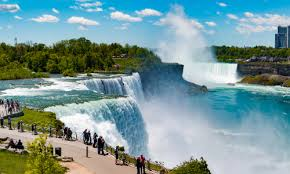
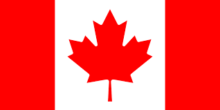

Általános információk

A kontinens három nagy országból áll: az Egyesült Államokból, Kanadából és Mexikóból, valamint több kisebb közép-amerikai és karibi államokból. A főbb nyelvek az angol, spanyol és francia.
Észak-Amerika a világ harmadik legnagyobb kontinense,
kulturálisan,
gazdaságilag és természeti
szépségekben rendkívül gazdag térség.
A kontinens három nagy országból áll: az Egyesült Államokból, Kanadából és Mexikóból, valamint több kisebb közép-amerikai és karibi államokból. A főbb nyelvek az angol, spanyol és francia.
Az őslakos kultúrák, mint az aztékok, maják már évezredekkel ezelőtt kialakultak. 1492 után a kontinensre érkeztek az európai felfedezők és telepesek. Az Egyesült Államok 1776-ban nyilvánította ki függetlenségét, majd Kanada és Mexikó is önálló államként fejlődött tovább.
| Város | Ország | Látnivaló | Érdekesség | Kép |
|---|---|---|---|---|
| New York | Egyesült Államok | Szabadság-szobor | Az USA egyik legismertebb jelképe, 1886-ban Franciaországtól kapta az ország. |  |
| Toronto | Kanada | CN Tower | A világ egyik legmagasabb tornya, csodás kilátással a városra és az Ontario-tóra. | |
| Mexikóváros | Mexikó | Templo Mayor | Egy ősi azték templom romjai, a város közepén található. |  |
| Niagara-vízesés | Kanada / USA | Természeti csoda | A világ egyik legismertebb vízesése, Kanada és az USA határán. |  |
| Ország | Jellegzetes étel | Recept |
|---|---|---|
USA

|
Amerikai palacsinta | |
| Kanada  | Poutine (sajtos, szószos sült krumpli) | |
Mexikó

|
Taco | |
Jamaica

|
Jerk csirke |